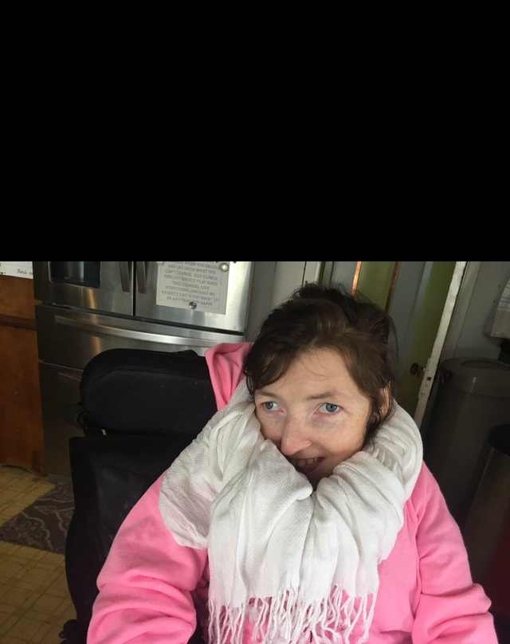
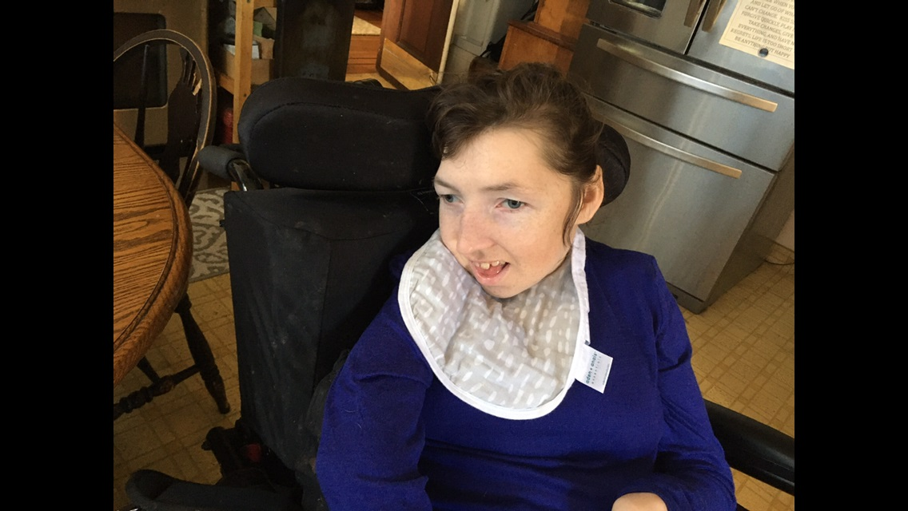

This website is about my little sister, Miranda. This page will describe her hobbies.

Big smile.
So what does she like to do? Well she isn't capable of walking, but she always had nurses that looked after her, and they
will go on walks with her. Probably her favorite thing to do is watch Sesame Street on TV. Though she is older now, she
appears to always have really enjoyed it. My parents and the nurses put on MTV or other more adult shows sometimes too.
...Haha another big smile.
Lilliworks has a tool called a "little room." This is like a frame with a bunch of colorful toys that make noise when you
move them dangling on the inside of it. The person who uses it lays on the ground with something soft under them and the
little room is placed over them. It is supposed to help her learn. I think it's more of a fun thing for her to do, as she
always seems happy and at peace in there.

Not really smiling, but looks happy.
Other things we like to do with her are just hang out outside and listen to music.
 Miranda and her brother Jordan (the author)
Miranda and her brother Jordan (the author)
Lilliworks is my parent's nonprofit company that makes tools for kids with disabilities to learn with. Since traditional learning may
not make sense. If you are interested in learning about a good cause.